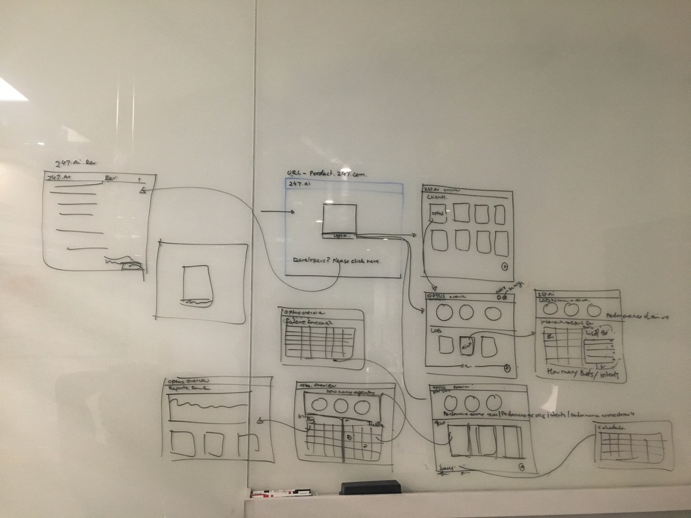
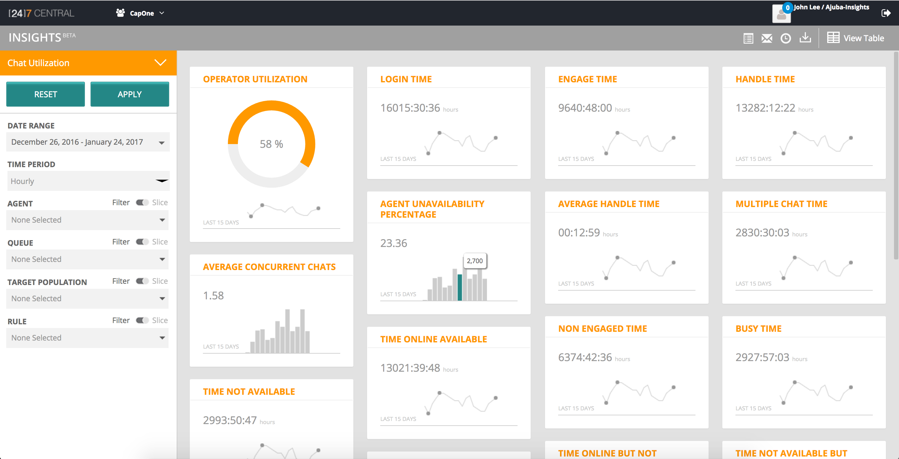

Earning the System View
Three years at [247].ai — WFM, client taxonomy, AI-human handoff, design system, and a self-serve enterprise console — and how the pieces became one platform that 37 enterprises ran themselves
The job nobody had defined
I joined [247].ai in 2016 as Director of Design. The actual job was cartography.
The platform was a collection of acquired products sharing a logo: AIVA for conversational AI, WFM for workforce management, Chat and IVR for channel handling, ActiveShare for co-browse, Campaign Manager, Search Bidding, Model Workbench. Each built by a different team, on a different data model, for a different user.
Nobody had mapped how they connected — or designed for what happened between them. When AIVA handed off to a human. When a weeks-old forecast had to flex against a live queue. The system existed. The experience didn't.
Six moves, one picture
The most ignored user
Started with WFM and the user every vendor had overlooked: the contact centre agent on the floor.
Learning to read a client's world
Mapped each enterprise client's product hierarchy by hand — iteration by iteration on a glass wall — before designing anything for them.
The handoff gap becomes visible
Only visible once you'd understood both sides. Redesigned the AIVA-to-human transfer as a briefing system, not a failure state.
The design system as forcing function
Project Heisenberg: 18 months, crowd-sourced, 70+ components — and the mechanism that made teams see how their products connected.
The system becomes visible
The full-wall map. All nodes, all connections. The triangle — Visitor · Agents · Enterprise — earned from the inside out.
The triangle becomes a product
The whiteboard didn't stay on the whiteboard. 37 enterprise clients configuring and running their AI stacks through one unified SaaS console.
Move 01 — The most ignored user
71% of contact centres had no workforce management system at all. Of those that did, 83% reported significant problems — tools described as "not fit for purpose," poor communication between roles, no shared view of what was happening on the floor.
Every WFM tool had been built for whoever procured it, not the people who used it daily. Agents, supervisors, managers, and planners each needed completely different things from the same software. No vendor had resolved this because most had never spent time with agents between calls.
First: a full workflow map — how forecast, scheduling, rostering, and real-time management connected across all four roles. Weeks before the first interface was sketched.

The WFM role flow drawn before a single screen: Agent (present tense) → Team Lead (intraday) → Manager (weekly) → Workforce Planner (long-range), with bidirectional dependencies running through every layer.
Four roles, four time horizons — one system
Between calls, under time pressure. Needs schedule, swap request, adherence status. Every extra screen is cognitive tax.
Managing spikes, adjusting coverage, watching service levels against contractual targets. Needs live metrics that are immediately actionable.
Building schedules, managing shrinkage, balancing channels. Needs precision — the right headcount forecast, not an approximation.
Multi-skill requirements, queue-group planning, long-range availability modelling. Needs accuracy at scale across weeks and months.
Three surfaces, three different designs
The agent portal was built around subtraction. One schedule view, swap requests, adherence status — nothing else. Things that had always needed manager approval — swaps, time off, schedule queries — agents could now handle themselves. Less friction for agents, less overhead for managers.

Shipped UI — WFM Intraday, Nike Football. Chat Waiting, Service Level 80%, Utilisation 75%, live against SLA targets. The metric layout came directly from "what do you actually check first?" interviews with supervisors.

WFM Forecast — Queue_14, Week 33, August 2017. Forecasted volumes, required agent count, shrinkage, and Update Forecast workflow. Shipped to Nike Football, Cisco, Hilton, Target.

Full WFM product architecture mapped in a Bangalore conference room — landing page through scheduling, rostering, intraday, and forecast views. The note at top reads "Do Not Erase" in Kannada, Hindi, and English. This board stayed up for two months.
WFM users with significant problems in existing tools — the research finding that set the brief
Cost reduction through self-serve design and reduced management overhead
Reduction in blunt overstaffing through unified human + virtual agent planning
Nike Football · Cisco · Hilton · Target — contact centre operations at scale
Move 02 — Learning to read a client's world
Knowing how agents worked was one half. The other half: understanding how each enterprise client organised its own world before designing anything for them.
Cisco doesn't have one customer journey. It has Routex customers, Webex customers, Sales, Service, IVR, Voice Chat — each with different intent patterns and resolution paths. No platform design holds until you understand how the client itself is structured. So I mapped it directly on the glass, three iterations on the same wall, each more accurate than the last.
├── Routex
│ ├── Sales
│ └── Service
└── Chat / IVR
├── Sales + Service
│ ├── Chat
│ └── IVR
└── Router
├── Routers · Switch
│ Unger · PZ
├── Chat → Sales
│ Service
└── Voice Chat · IVR

Three iterations of Cisco's product hierarchy on a glass wall. The reflection in the glass is mid-third iteration. Each pass exposed what the previous version missed.
This taxonomy work became the model for Lines of Business discovery — the platform later ingested each enterprise's contact data and surfaced intent patterns automatically. You can only automate what you've first understood by hand.
Move 03 — The handoff gap becomes visible
With both sides mapped — the human agent's world and how AIVA classified intent — the gap between them became obvious.
AIVA was one of the first production conversational AI systems at Fortune 500 scale. When it couldn't resolve something, it transferred to a human. Engineering called this an exception flow — AI fails, human takes over. It was actually the most critical moment in the whole interaction. Nobody had designed it.
Without a designed handoff, agents asked customers to start over. The handoff console isn't an interface — it's a briefing.
At transfer, the agent received everything AIVA had built: intent classification, conversation history, customer profile, suggested responses — all ready before they spoke the first word. The customer didn't repeat themselves. The interaction continued, not restarted.
- Intent classification — the Line of Business intent AIVA identified, with confidence score
- Full conversation history — every exchange, timestamped and readable at a glance
- Customer profile — previous interactions, subscription status, prior issue history
- Suggested responses — drawn from the same pool AIVA uses, surfaced as starting points — not scripts
The agent inherits the intelligence AIVA built — not just the conversation record. A record is a log. Intelligence is what to do next.
Designed and shipped in 2016. No industry vocabulary existed for this yet — "agentic UX," "AI handoff patterns." It came from two years of mapping both sides closely enough to see what was missing between them.
Move 04 — The design system as forcing function
The design system work exposed something harder than visual inconsistency: teams weren't just building things that looked different. They were working from different assumptions — different data models, different names for the same concepts.
"Agent utilisation" was "agent occupancy" in another team. "Queue" and "Line of Business" were used four different ways. Chat had no visibility into how their patterns would interact with IVR when a customer moved channels.
A design system imposed from the top gets worked around. One built by the teams using it actually sticks — because building it forces the arguments, and the arguments force teams to understand each other's products.
The system resolved:
- Naming conflicts — one term per concept, across all surfaces. The same discipline applied to client IA in Move 02, now applied internally.
- Component duplication — 70+ components replacing independently evolved patterns across WFM, Chat, IVR, and the AIVA console
- Colour semantics — 8 palettes with defined roles: orange for brand/active, green for approved, blue for bot/data, red for alert
- Theming (VCC) — enterprise clients could customise their customer-facing widget within the system's constraints, without breaking it
![[24]7.ai design system colour architecture](247ai-design-system-palette.png)
[24]7.ai colour architecture — eight semantic palettes across navigation, brand, status, data visualisation, and semantic states. The palette came first; components followed.
The design sprints were the adoption mechanism. Every org-wide sprint solved a real product problem and put teams in contact with the system through actual use, not documentation. April 2017 to September 2018 — eighteen months from first component to platform-wide adoption.
Move 05 — The system becomes visible
At some point the territory resolves — all pieces in relation to each other, visible at once. For this platform, it happened on a whiteboard.
![Full-wall [24]7.ai product system map](247ai-system-map.png)
The complete [24]7.ai product ecosystem — every node, every connection. Prediction engine feeding both AIVA and the WFM forecast. NL Tools serving chat and IVR. The unified admin console holding 37 clients. This diagram isn't planned. It becomes possible.
The distillation: three vertices, one shared intelligence layer at the centre.

Visitor · Agents · Enterprise — with shared intelligence at the centre. Three years of work in one shape.
Bots and humans as one category of agent — differentiated by capability, not type. That framing shaped everything downstream: shared intent, unified WFM, one design system.
![[24]7.ai platform screens — design system applied](247ai-screens-overview.png)
The design system applied across platform surfaces — WFM scheduling, intraday supervision, AIVA handoff console, enterprise configuration. Visual consistency as evidence of systems alignment.
Move 06 — The triangle becomes a product
The abstract became operational. The triangle — Visitor · Agents · Enterprise — was never meant to stay on a whiteboard. It was the architecture for a product.

The earliest whiteboard sketch of the console structure: 247.ai public site → product.247.com login → multi-client dashboard (Optus, others) → client-specific views (reports, agents, performance, schedule). The triangle became a flow. The flow became a product.
The culmination was the [24]7.ai unified SaaS console — one platform through which 37 enterprise clients managed their entire customer engagement stack. Not operated by [24]7.ai on the client's behalf. Configured and run by the clients themselves.
The same logic that built the agent portal in Move 01 — things that required approval become self-managed — now applied to the entire enterprise layer. Configure a new intent. Publish a card. Adjust WFM coverage. Run a journey analysis. Without a professional services call.
Seven modules, one console
5-step self-serve onboarding: company → vertical → products → add-ons → bot naming → deploy. Nike Football: AIVA Digital, Chat, WFM, and IVR2Chat provisioned in a single flow, zero professional services.
Role-based command centre — Lines of Business, interactions, conversions, savings. Different views for an account admin and a workforce planner at the same company.
The workforce management work from Move 01, in clients' hands. Nike Football: 184 agents, 24 teams. DISH: 500 agents, 82 teams. Intraday, forecast, scheduling — live against contractual SLAs.
Full intent library — multi-channel, multilingual, importable — with dataset views showing how customer intents cluster in semantic space. Move 02's hand-drawn taxonomy, automated at scale.
Card and form builder — payment flows, account views, custom interactions — published simultaneously across AIVA, Chat, and ActiveShare. One source of truth for what the bot and the agent both say.
Query-based analytics: Pattern A/B, hypothesis testing, defined vs dominant paths, customer journey view (Order → Call → Activation → Bill). The data surface that made the platform's intelligence visible to the enterprise.
The theming engine from Move 04, in clients' hands. Nike Football customising their chat widget and payment card — within the design system's constraints, without breaking it. Desktop, tablet, mobile preview built in.

[24]7 CENTRAL Insights — shipped analytics UI showing Chat Utilization for a client. Operator Utilization, Login Time, Engage Time, Average Concurrent Chats, Agent Unavailability — the dashboard that turned contact centre data into operational intelligence clients could act on themselves.
The Intents module is where Move 02 became a platform capability. DISH's intents: Pay Bill dominant, clustering with Service Interrupt and Auto Pay. Further out: Cancel HBO, New Remote, Log Account. The pattern a workforce planner once inferred from call logs was now a map a client could interrogate themselves.
Enterprise clients self-operating on the unified platform — SiriusXM, Dish, Nike Football, Cisco, Hilton, Target, Best Buy, Optus, Vodafone
YoY revenue growth — two consecutive years following platform unification
Cost reduction through standardisation and platform consolidation
Regions — Americas, EMEA, APAC — one platform, one experience architecture
Design system components unified across all seven platform modules
AI-human handoff patterns first shipped — predating the industry conversation by years
What this kind of work requires
Each piece had to be understood deeply before the connections became visible. WFM showed how agents think under pressure — that shaped the handoff console. Client taxonomy showed how enterprises organise complexity — that became Lines of Business. The design system surfaced how teams had been naming things differently — that forced crowd-sourced governance. Each move was both the job and the learning.
The glass-wall Cisco photo — three iterations on the same surface — is what that process looks like in practice. Not a framework applied to a problem. A territory understood by hand. The map becomes a product once you understand it well enough to hand it to someone else.